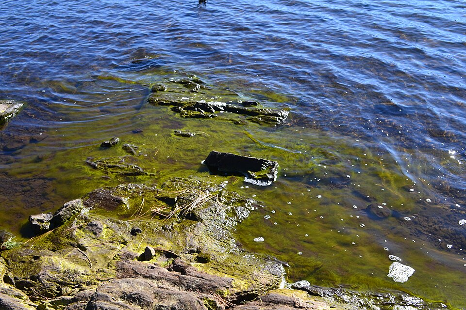
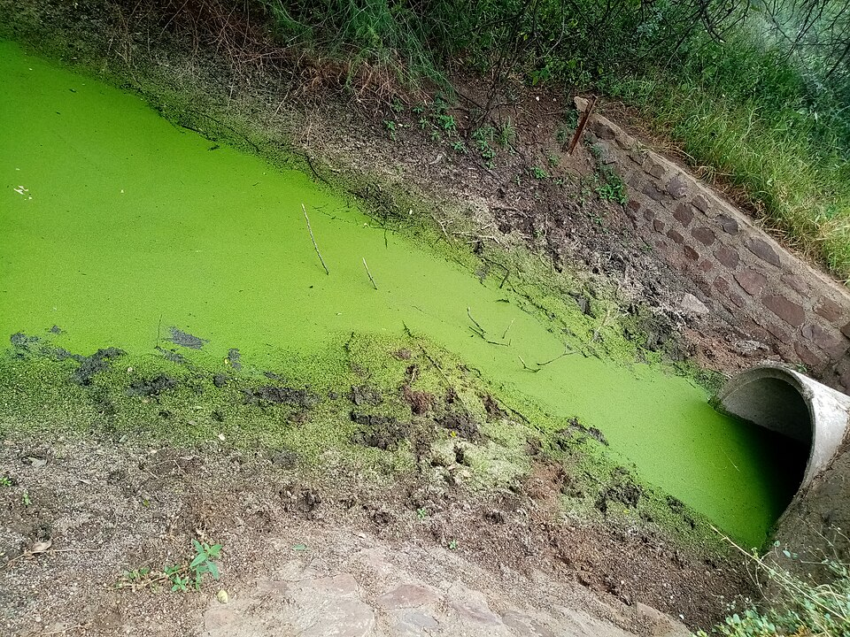
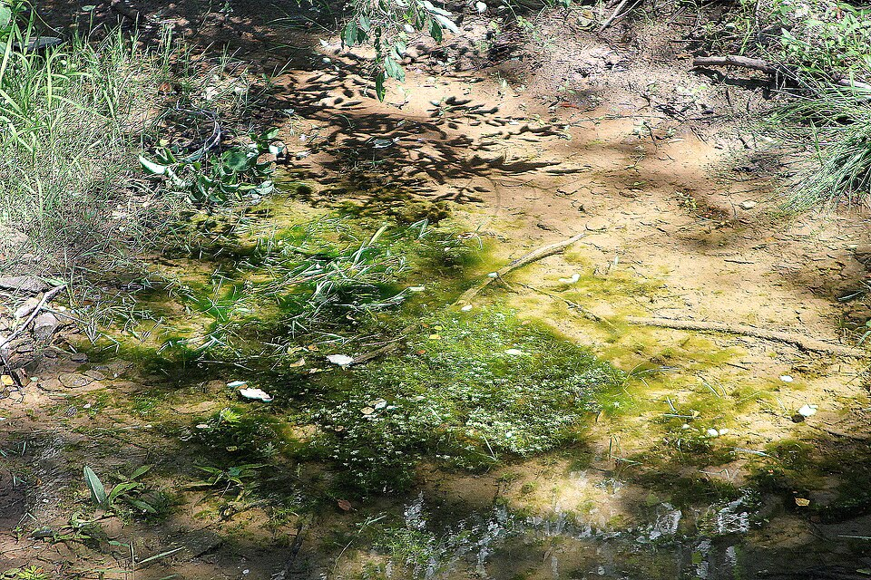
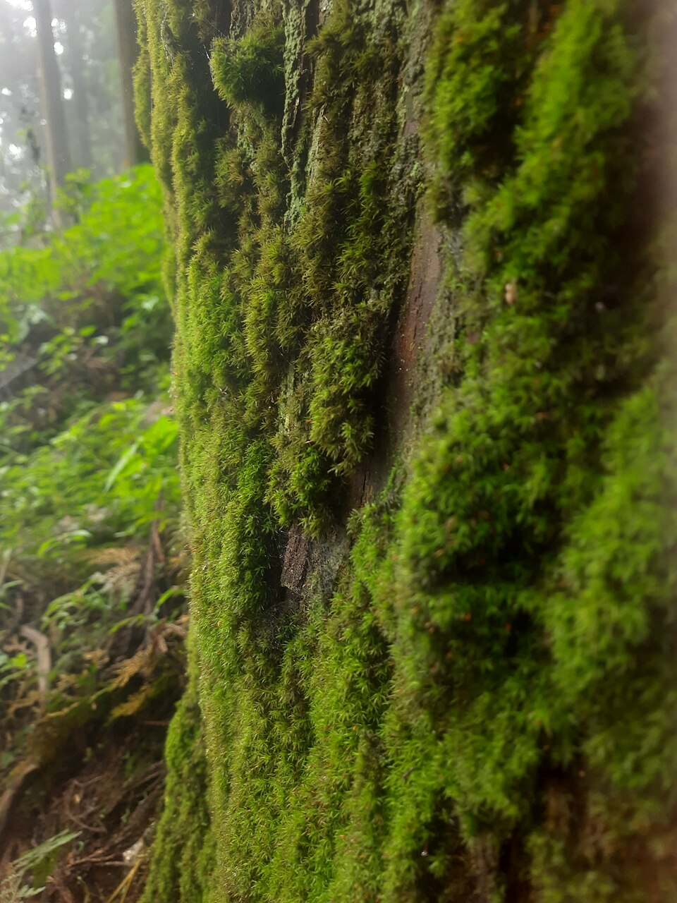
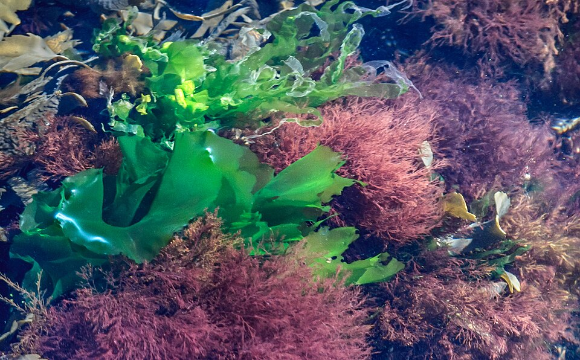
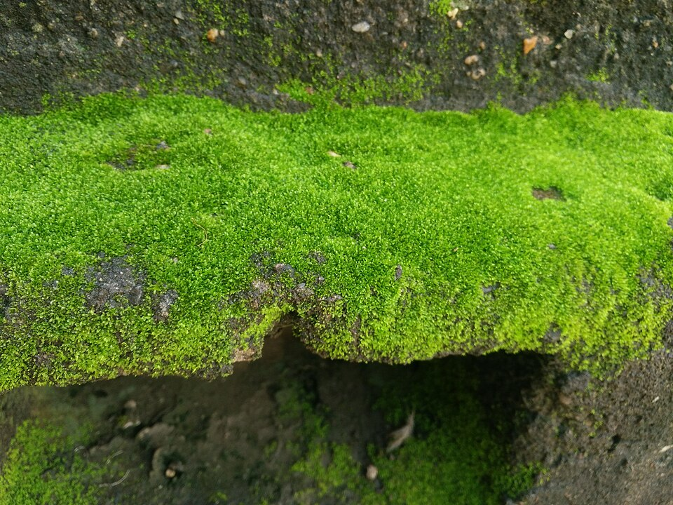
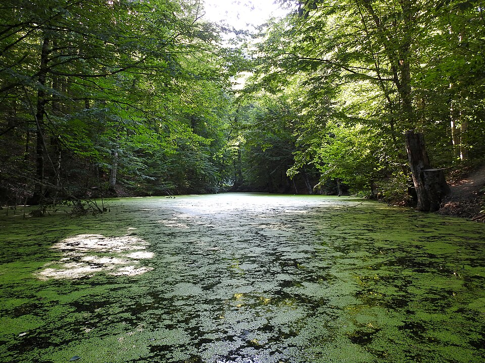
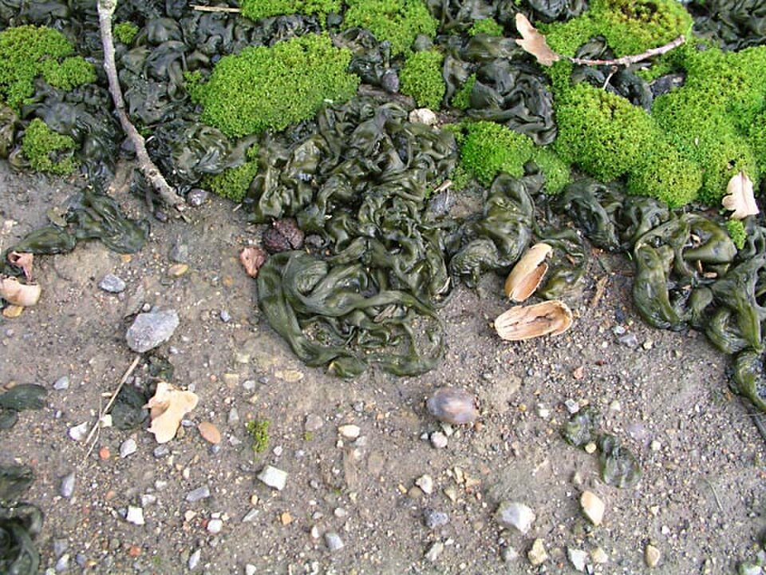
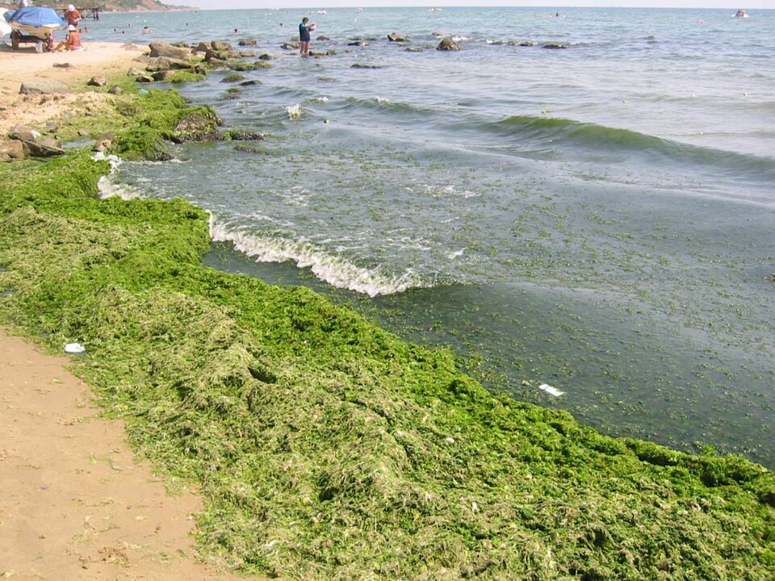

Merci pour l'oxygène
Les algues et le phytoplancton produisent une part considérable de l'oxygène que nous respirons : environ la moitié selon les estimations.
Là où tout a commencé : les pionnières des océans.
Plus de 500 millions d'années d'histoireAvant les forêts, avant les fleurs, il y avait l'eau et les algues. Ce sont elles qui ont ouvert le grand chapitre de la vie végétale. Simples, souples et sans racines, elles ont préparé le terrain pour toutes les plantes qui allaient conquérir les continents.
Les algues et le phytoplancton produisent une part considérable de l'oxygène que nous respirons : environ la moitié selon les estimations.
Une algue absorbe l'eau et les minéraux par toute sa surface. Portée par l'eau, elle n'a pas besoin de tiges pour se tenir.
Les laminaires géantes forment de vraies forêts sous-marines, et certaines poussent de plusieurs dizaines de centimètres par jour.
.jpeg)











.jpg)
Les algues se reproduisent de façon asexuée (division cellulaire, fragmentation, spores) ou sexuée (fusion de deux gamètes en un zygote). Beaucoup ont un cycle à alternance de générations : un gamétophyte haploïde produit des gamètes, et un sporophyte diploïde libère des spores par méiose. La lumière, la température, les nutriments et les marées déclenchent la reproduction.
_(Ifremer_00377-48853_-_8).jpg)